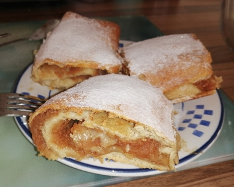
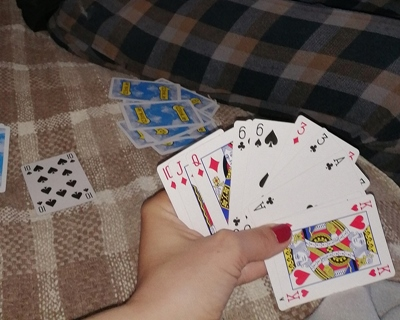
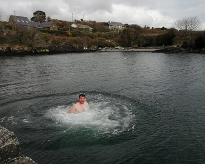
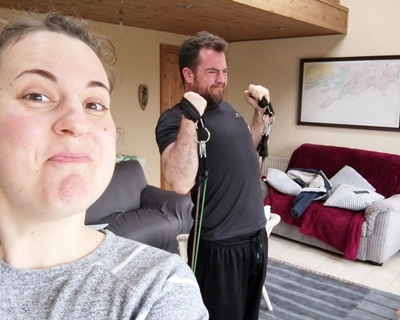
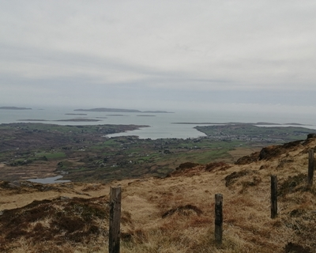
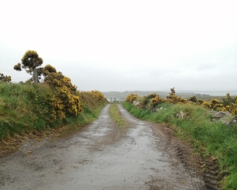
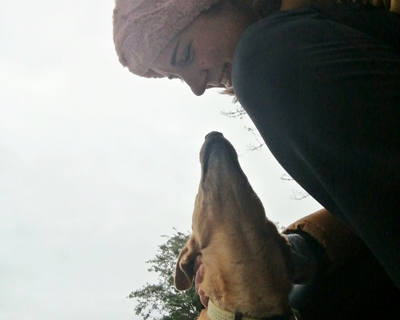
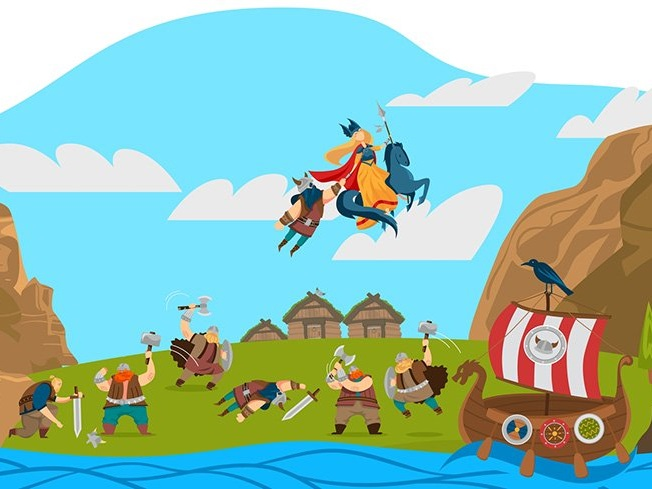
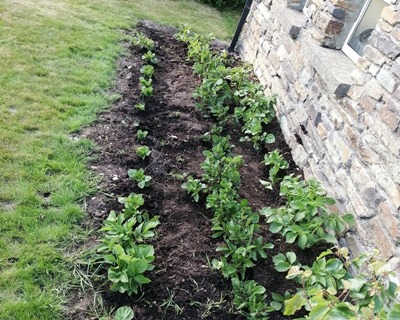

Love goes through the stomach
 Brownies, blondies, apple pies, banana bread... Each cake found its place in Kilbronogue's oven.
There were (and still are) so many meals I have never tried before I arrived in Ireland and Irish breakfast, until then,
was just something I had seen on the picture.
I believe that the food and food preparation
has to be one of the most inspired and inspiring things on the planet.
When you have time for it.
If you have time for it...
Learn a new card game and find a lousy oponent
 "Life is like a game of cards. The hand you are dealt is determinism; the way you play it is free will" was
said by Jawaharlal Nehru.
Allow your oponent's free will
to sky rocket your self-esteem; especially if it happens you're better in Gin Rummy and Rumikub as well :)
Other things you can play are jigsaws, Sudoku, Solitaire, Hearts, Spades...
Don't jump in the Atlantic ocean.
Unless you're Irish

My growing up next to not so savage Adriatic sea, made me feel fascinated by oceans and its tides and currents. The ocean's temperature will always stay cold for this warm Slavic blood or should I officialy admit what my above-mentioned oponent suggested: I really AM a coward. I presume it's time for me to also officialy admit how really blessed I was for the great company I had during the isolation period.
Make fun of people who are trying to exercise
Actually, don't do that. You could, though, take one unexpected photo to capture other person's painfull grimace while they try to exercice.
Some of the following exercices you could do at home:
- Lunges
- Pushups
- Squats
- High knees
- Wall sit
- Burpees
Whatever you choose, keep going. By the end of the day, treat yourself with a movie from the DVD you had bought in second hand shop cause you knew that the internet signal in the village would be bad. :)
The best view comes after the hardest climb
I didn't say it metaphorically. Damn you apple pies and brownies and...
So, rural population
in Ireland was reported at 36.6% in 2019 with 3.8 million recorded sheep (and we saw lots of sheep on our way to the top).
We climbed really lovely Mount Gabriel
(Irish: Cnoc Osta), 407 m high mountain situated immediately to the north of the town of Schull.
A roadway serving the radar installations on the summit is open to the public.
From the peak of Mt. Gabriel, there are views south over Schull Harbour and Long Island Bay.
To the east and southeast, the views take in Roaring Water Bay and its many islands,
popularly known as Carbery's Hundred Isles. North and West is a view of the mountains
of the Beara Peninsula and South Kerry.
Walk old paths and picture Ireland before
Real road system didn’t develop until the 18th Century with the building of turnpike highways between major cities.
In the 18th Century, Cork became the largest centre for the butter trade in the world and needed transportation corridors
to ensure butter could get from remote rural areas to the Butter Exchange (now a museum) in the city.
The Butter Roads
were built from the 1740s on, and provided an efficient and speedy (for the time) route to market.
Butter was packed in firkins (40 litre barrels), stacked onto carts, and transported from West Cork and Kerry to Cork City
to be loaded onto ships for Australia and America.
Traces of the old butter roads remain. One stretch runs between Ballydehob and Schull, the one we proudly took.
Make friends with animals
"Animals are such agreeable friends—they ask no questions; they pass no criticisms."
-
George Eliot.
"The ideal of calm exists in a sitting cat."
- Jules Renard
There are 60 mammal species that have been recorded in Ireland. A new Red List of Irish terrestrial mammals was published in 2009
and all 26 terrestrial species native to Ireland, or naturalised in Ireland before 1500, were assessed.
Of these, the grey wolf and brown bear are extirpated; the black rat was assessed as vulnerable; Leisler's bat, the otter,
and the red squirrel were assessed as near threatened; Brandt's bat was data deficient; and the remaining 20 were of least concern.
Start learning Norwegian after reading about
Jotunheimen Nasjonalpark

My admiration to people speaking foreign languages seize to my very young age; I still do remember one Slovenian mother teaching her son how to say "carrot" in Croatian. Ohhhh... it was his 4th language, I'd guess. So you could imagine how thrilled I was with my first foreing language to be - German. My knowledge of German is lame, but I kind of compensated it with speaking French and Italian. I learned English by watching Cartoon Network :).
Norwegian is a North Germanic language I was attracted to due to Norway mistical beauty and its mythology tales.
Plant some potatoes and be proud when you see them grow
To potato is closely related hopelessely sad but still really famous story about
Great Famine (Irish: an Gorta Mór),
also known as the Great Hunger or Great Starvation.
It was a period of mass starvation and disease in Ireland from 1845 to 1849.
With the most severely affected areas in the west and south of Ireland, where the Irish language
was dominant, the period was contemporaneously known in Irish as An Drochshaol,
loosely translated as the "hard times" (or literally, "The Bad Life").
The worst year of the period was 1847, known as Black '47.
During the famine, about one million people died and a million more emigrated,
causing Ireland's population to fall by between 20% and 25%.
Irish period drama film "Black '47"
released in 2018 describes the devastating year of the famine.